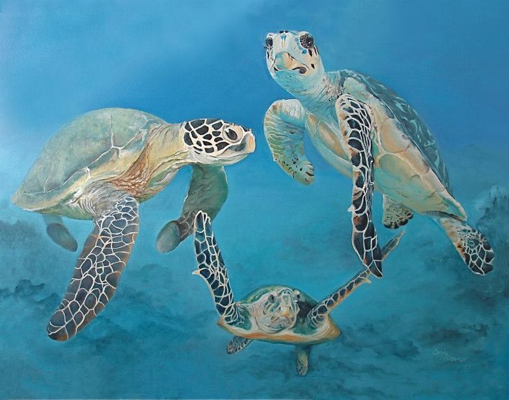

(From left to right: Mom, Baby, Dad.)

(From left to right: Mom, Baby, Dad.)
While scuba-diving near the Great Barrier Reef in Australia, researchers came upon this unique family of sea turtles. Unlike normal sea turtle families, this nuclear family consists of two heterosexual parents and a single baby sea turtle. Researchers have decided to profile this family unit for future research.
Tends to stare at everything, a real stare contest champion.
Almost always hangry, should definitely be given extra lettuce.
Probably a late bloomer, small and cuddly.